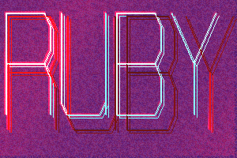
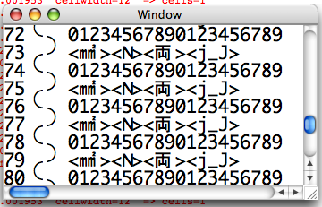
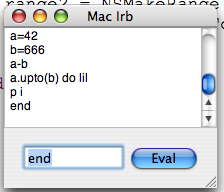
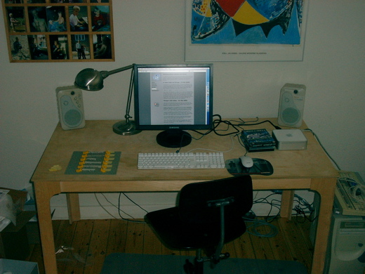
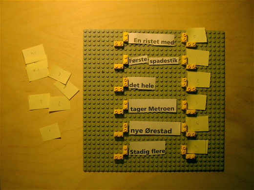
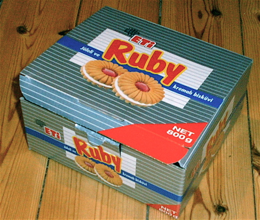

Weblog about editors and Ruby
Hi, welcome to my blog, my name is Simon Strandgaard and I'm the author of AEditor. My age is 25 years and I'm studying mathematics and computer science. I usually chat on irc, logged in as neoneye on the #ruby-lang channel. I have a small appartment in Copenhagen, the capital of Denmark.
Textmate - 5 aug 2005
5 months ago I did something very bad, with no regrets. I replaced my noisy Gentoo Linux box with a noiseless Mac Mini. I began using TextMate, and now no longer sees a need for good editor. This editor is superior to any other editor I have tried in the past, its the next generation GUI VI/emacs editors. It can be extended in any possible way. Everything is so intuitive that even non-programmers can do macros, commands, make changes to the language files. IMHO TextMate is the most wellcrafted editor ever made.
Recently I have switched from qwerty to the superior dvorak layout.
Obfuscated Ruby - 1 apr 2005
I have written an obfuscated piece of Ruby code for IORCC 2005, The International Obfuscation of Ruby Contest. I made a program that both compiles as C++ and can be interpreted by Ruby.
Cocoa Crazy - 20 mar 2005
Today I have added scrollbars to my Cocoa Textcanvas (which I want to interface with AEditor2). Its amazingly slow to do scrolling.
Cocoa Crazy - 08 mar 2005
Today I wrote my first Cocoa program. I figured that I needed a nice IRB frontend for mac. This would be a good subject to learn about cocoa.
I got the frontend working relatively quickly. Now i'm investigating how to get it connected with IRB. I suspect that I need to embed ruby into objective C.
I got my Big Mac - 02 mar 2005
This Wensday I recieved my minimac. Now my desktop looks like this. Right most on the floor you see my big old machine. Right most on the table you see the mac mini. Left most on the table you see my lego model I used to develop AEditors new data structure.
Recently I cleaned up my appartment, I carried 3 computers, 10 keyboards, one 15" crt display, some boxes with stuff in down to my basement. When I cleaned up I managed to find a computer hidden under my bed which I totally had forgotten. The really amazing thing is that I also cleaned up some time ago, where I carried down 6 computers to my basement, plus 3 crt displays. Now I'm confident that the huge computer on the picture is the only remaining computer that I must carry down to the basement.
Below you see the lego model I used for building the new caching system for AEditor. The white pieces of paper with text on is actual text on a line. The small yellow pieces of paper indicates the end of line state. Whenever a line is modified then we flag it as dirty. Later when we need to update the display, we run the lexer for the dirty lines. Depending on the state we get back from the lexer, in case it corresponds to the next line state, then we stop propagating. In case its different then we simply flag the following line as dirty. The most tricky part is when you want to insert or remove entire lines.
Don't worry if you don't understand what I said above. My point is only that I could not have though it out without lego and unittesting.
Below you see a cookie box. They didn't tasted that good, but they had a cool name.
A new view on things - 15 feb 2005
I recieved the 19" tft display last week, its a Samsung SyncMaster 910T. I must say its wonderful to do my programming on. I went crazy and also ordered a mac mini, lets hope it arrives soon. I have big expectations to this small piece of machinary. My current mechanic beast is big, noisy, slow, stoneage cisc architecture and ready to be thrown out.
'-NEON-EYE-'.unpack('C*').inject(0){|a,b|a+b} #-> 666
Last monday I felt sick, pain in my brain and my nose running all the time. I had to goto my job and the next day to the university and wensday to the job again, even though I was sick. Thrusday I was still sick, and had to go on a small ski vacation for 3 days, where I snowboarded the first 2 hours and afterwards switched to alpine ski (because I got beaten up too badly and because I was a little sick). Anyway my sickness disappeared on the ski vacation and I'm now ready to do some more programming again. Its impossible to serious coding when you are in great pain.
Things I did today - 01 feb 2005
I have had my first day free from job in long time, so I have been busy with solving all kind of issues (Things that I really should have been doing ages ago). Im usually very bad at solving realworld issues, because I'm sucked into a computer most of the time.
Someone tried to break in to my appartment this weekend, apparently nothing got stolen. Its impossible for me to tell if any of the backup cds are gone :-(. With that whole in the window the temperature has been quite low inside. Today I have arranged to get the broken window fixed.
On the job we released our program yesterday (31 jan 2005), so my colleagues wanted to be able to reach me no matter where i am, in case the customer has problems with our product. I had a heavy cellphone ages ago, which I never used. Today I have bought a cheap cellphone.
I have had these glasses for a long time, so long that they had become ugly and twisted. Today I went to glass-specialist and got the glasses rewamped. They look and feels now as good as new.
Today I went to the university and bought all the books that I need for this course on the university. Plus I bought the Programming Ruby second edition (and discovered that my [ruby embedded into c++] project was mentioned in it, exciting).
Today I have rearranged the furnitures and cleaned up my appartment, carried down 3 monitors and 6 computers to my basement. All the piles of A4 papers have been putted in bags and has been stored under my bed. My university assignments has been put into a ringbinder.
In the appartment complex where I live, we are about to get a cheap internet+phone+tv connection. Today I have been filling out 3 formulars so that it can be installed at my place.
Today I talked in phone with the tax woman, attempting to figure out how to solve a tax issue of mine. But I never really understood this. Maybe I'm bad at money.
And today perhaps my 19" tft display will arrive?
AEditor 2.1 released - 19 jan 2005
Yesterday I packed up 2.1, codename "megacorp". Since last release I have only had very little sparetime, which I have spend on adding folding and bookmarks.

As you can see 14 keybindings so far. I still need to add keybindings for pageup/pagedown, search, replace. There is no smart HOME behavior (I have been thinking of also adding a smart END behavior, that toggles between the end of the text and the end of the line).
Lothar Scholz asked me about multicolor fonts, how I wanted to use them in the editor (Yes, this is indeed something I want). I spend 80% of my awake time in front of some kind of editor, its so sad to look on mono fonts. I want to look at something nice (other times I want to look at good old amiga demo/game fonts). This will require that I make my own font editor and my own file format for storing these fonts. Alternatively I could make the fonts as SVG, so they would be scalable.
AEditor 2.0 released - 03 jan 2005
Earlier today I suddenly had gotten vertical and horizontal scrolling working. I decided to see if I could add enough features to it today so it would become able to release. I added load, save, exit, home, end, and wrote some default text in case there is no filename supplied. I fullfilled my goal and released it to the wild [download].

The ruvi author (Alexander Kellett) would like to write a vi interface for aeditor. But he has some demands first. A persistent undo system which keeps its tree structure (so no undo info is discarded). I think I will aim towards adding this at some point.
Next I will be looking into enhancing aeditor with folding, more editing strategies, eventually add templates. First I add features which is new to me. Afterwards I can add all the features that I'm already familiarized myself with: syntax coloring, undo/redo, macroes.
Happy New Year - 02 jan 2005
Just before christmas I decided to begin from scratch again. After doing lots of analysis during the fall of 2004, I now feel that I'm ready to try out my new ideas. While it has been christmas I have implemented a new datastructure that is superior to earlier editor datastructures of mine. Its faster, its unicode and much more robust. I have switched from using Ruby's native curses package, to making my own wrapper for libncursesw. This enables me to render text as UTF-8. I am fairly satisfied with the new model.
The view is still very early, it supports insert and backspace. I got suprised today that I were able to reduce the code for these 2 operations, so things almost happens automagicly. Both operations are just a simple model.replace.

I got this xmas present from my sister. Thanks.